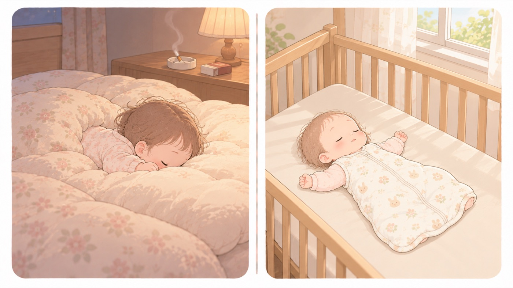

まず知っておく
乳幼児突然死症候群（SIDS）
事故ではなく原因不明の病気。それでも発症率を下げるポイントがある
乳幼児突然死症候群は、大きな異常のきざしがないのに、乳幼児が睡眠中に亡くなってしまう原因不明の病気です。窒息などの事故とは区別されます。令和6年には55名の乳幼児が亡くなり、乳児期の死亡原因の第3位でした。予防法は確立していませんが、発症率が低くなるポイントが分かっています。

左は危険な例、右は安全な例です。- すること：1歳になるまでは、寝かせるときは「あおむけ」
医学的な理由で医師からうつぶせ寝をすすめられている場合を除きます。顔が横を向いているだけでは足りず、顔が見えるあおむけにします。 - すること：無理のない範囲で母乳育児を
母乳で育てられている赤ちゃんは、発症率が低いとされています。できる範囲でかまいません。 - すること：保護者等はたばこをやめる
妊娠中の喫煙と、赤ちゃんのそばでの喫煙はどちらも発症率を高めます。やめられない同居家族がいる場合は、屋外で吸い、吸ったあとは上着を脱いで手を洗ってから抱くよう頼みます。衣類や髪についた成分も残ります。換気扇の下や別の部屋では、煙は家の中に戻ります。 - すること：胸元を触って、汗ばんでいたら着るものを減らすか室温を下げる
こども家庭庁は、過度な保温で発症率が上がるとし、赤ちゃんの胸元を触ってみて、汗ばんでいる場合には着るものや室温で調整するよう求めています。手足が冷たくても、胸元が汗ばんでいれば暑すぎです。 - しないこと：「事故対策をしたから乳幼児突然死症候群も防げる」と考えない
寝床の対策は窒息事故を防ぐもので、乳幼児突然死症候群の予防法は確立していません。ただし、あおむけ寝と硬めの寝具はどちらにも効きます。
冬と、預け始めの時期
乳幼児突然死症候群は12月以降の冬期に発症しやすい傾向があり、こども家庭庁は毎年11月を対策強化月間としています。
こども家庭庁は、預かり始めの時期は環境の変化によるこどものストレスの増加が懸念されるとし、 重大事故につながりやすい睡眠中のうつぶせ寝と食事中の誤嚥食べものや飲みものが、食道ではなく気管のほうへ入ってしまうこと。について、 施設への周知徹底を求めています。 預け先には、あおむけで寝かせてほしいことを、入園前に伝えておいてください。
🛍 グッズの選び方
PR- 敷寝具は硬めで平らなものを選びます。あおむけ寝と並んで、どちらの対策にもなります。
- 掛け布団の代わりにスリーパーを使うと、顔に布がかかるのを避けられます。
- 体動センサーは異常に早く気づくための補助で、乳幼児突然死症候群を予防する装置ではありません。
- サンデシカ ベビー敷ふとん 固綿マット レギュラー 70×120cm固綿。沈まない硬さで、ベッドに合うサイズAmazonで見る →
- 10mois Hoppetta ふくふくガーゼ ベビースリーパーガーゼ素材。掛け布団をやめる時期の定番Amazonで見る →
- Sense-U ベビーセンサー（一般医療機器）🏅 第16回キッズデザイン賞 奨励賞（Sense-Uベビービデオカメラと体動センサ3）Amazonで見る →
- ベビーセンスホーム（マットレスの下に敷く非接触型・一般医療機器）🏥 病院・産後施設・保育施設で導入Amazonで見る →
- ニトリ 2つ折り 洗える固わた ベビー敷布団 70×120cm洗える固わた。汚したときに丸ごと洗えるAmazonで見る →
- プッパプーポ 6重ガーゼスリーパー（袖なし）袖なし。腕が自由に出るAmazonで見る →
リンクはAmazonアソシエイトリンクです。当サイトはアフィリエイトプログラムに参加しています。Amazonのアソシエイトとして、当サイトは適格販売により収入を得ています。 選び方の方針
この項目の根拠
- 11月は「乳幼児突然死症候群（SIDS）」の対策強化月間です（令和7年10月31日・こども家庭庁・PDF）（新しいタブで開きます）
乳幼児突然死症候群は原因不明の病気で窒息などの事故とは異なること、令和6年に55名が亡くなり乳児期の死亡原因の第3位であること、3つのポイント、11月が対策強化月間であること。 - 赤ちゃんが安全に眠れるように ～1歳未満の赤ちゃんを育てるみなさまへ～（こども家庭庁）（新しいタブで開きます）
あおむけ寝、あたためすぎに注意、硬めで傾斜のない寝具。赤ちゃんの過度な保温によって乳幼児突然死症候群の発症率が上がること、赤ちゃんの胸元を触ってみて汗ばんでいる場合には着るものや室温で調整すること。 - 預かり始めの時期における教育・保育施設等の事故防止に向けた取組の徹底について（令和8年3月30日・こども家庭庁・文部科学省・PDF）（新しいタブで開きます）
新年度となる4月は、こどもの新入園や進級、施設・事業所で勤務する職員の入れ替わりなど、教育・保育施設等の環境が大きく変わる時期であること。預かり始めの時期は、環境の変化によるこどものストレスの増加などが懸念されること。特に重大事故につながりやすい睡眠中のうつぶせ寝や食事中の誤嚥について、ガイドライン本文中の「重大事故が発生しやすい場面ごとの注意事項について」を改めて施設・事業所に周知を図るよう求めていること。 - 教育・保育施設等における事故防止及び事故発生時の対応のためのガイドライン（こども家庭庁）（新しいタブで開きます）
医学的な理由で医師からうつぶせ寝をすすめられている場合以外は、乳児の顔が見える仰向けに寝かせることが重要であること。何よりも、一人にしないこと、寝かせ方に配慮を行うこと、安全な睡眠環境を整えることが、窒息や誤飲、けがなどの事故を未然に防ぐことにつながること。